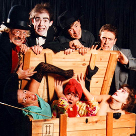
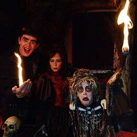
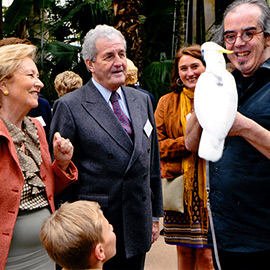

Ce numéro de colombes est ma-gni-fique…
Patrick Sébastien
Merci pour le superbe spectacle de magie sur le thème d'Halloween présenté à l'école !
Les enfants et enseignants étaient unanimes ! C'était génial ! A refaire absolument !
Ecole Européenne de Bruxelles IV
Jacques n'oubliera pas de sitôt sa fête d'anniversaire. Un clown/magicien qui allie, comme il se doit, humour et poésie.
Un spectacle, rythmé et sans temps morts. Les enfants et les parents ont été charmés.
Diane P. - Wavre
Merci pour vos prestations lors de la réception organisée à l'occasion du 10ème anniversaire de notre société.
Nos invités étaient impressionnés !
Tr@viata - Diegem
Thanks again Mr Adrian for the incredible performance during our wedding on 31st of august in Genk.
My guests are still talking about it! Just amazing...
Jean-Christophe and Asli - Genk
Merci Mr le magicien pour la merveilleuse après-midi que les copains de ma fille ont passé lors de sa fête d'anniversaire pour ses 5 ans.
Ce fut en effet magique et un vrai plaisir de voir cette lueur d'émerveillement briller dans leurs yeux.
J'ai reçu beaucoup de commentaires positifs de la part d'autres parents. Bravo pour la qualité du spectacle.
Carine D - Bruxelles
Merci pour votre prestation de dimanche dernier !
C'est la troisième fois que je fais appel à vous et une fois de plus tout le monde a été émerveillé.
Maxime était aux anges. Bravo !
Pierre & Stefanie - Ronse
La journée la plus chaude de 2012, le 19 août. Bravo pour vos prestations !
Toute la famille, les enfants et ma maman qui fêtait ses 85 ans s'en souviendront longtemps !
Très beau spectacle et une convivialité sympathique.
Je conseille votre spectacle à tous ceux qui veulent une formule anniversaire originale.
Michel A. - Waterloo
Le spectacle que vous avez réalisé pour notre mariage était absolument éblouissant !
Tous les invités étaient enchantés. Merci de tout coeur ! Et bravo !!!
Kim et Nicolas - Obaix

J’ai toujours été intéressé par le mélange des disciplines (magie, mime, pyrotechnie, etc.). J’ai ainsi crée un numéro (Feelings) mélangeant mime et magie qui remporta un Premier Prix au Championnat de Belgique en 1987.
C’est en 1989 sous l’impulsion de Stanislas (créateur du Cirque du Trottoir) que nous avons collaboré au spectacle « Les Magiciens ». Durant 7 ans nous avons joué ce spectacle plus de de 200 fois un peu partout en Belgique et en France (dont la première partie du chanteur Nilda Fernandez à l’Olympia à Paris).
C’est suite à cette expérience que je décidais de devenir « magicien professionnel ».
Pour en savoir plus
cliquez ici
">
Les Magiciens
En 1989 sous l’impulsion de Stanislas nous avons collaboré au spectacle « Les Magiciens » qui fut un événement décisif pour ma carrière.
Après plus de 200 représentations un peu partout en Belgique et en France je décidais de devenir magicien professionnel.
Pour plus d’infos cliquez sur la photo

En 2003 pour la période d’Halloween nous avons créé le spectacle « Wickawitch » à la demande du parc d’attraction Bellewaerde. Nous y sommes resté durant 5 ans avec chaque fois un spectacle différent et avons ainsi touché plus de 20 000 spectateurs par saison.
En 2006, dans le cadre de l’opération Cap48, la RTBF fit appel à mes service pour créer des numéros de magie « sur mesure » pour différents présentateurs de la chaîne (Jacques Mercier, François de Brigode, Joëlle Scoriels, Maureen Louys, etc.). Cette formule fut réitérée avec succès en 2007, 2008 et 2009
Pour en savoir plus
cliquez ici
">
Wickawitch Show
En 2003 pour la période d’Halloween nous avons créé le spectacle « Wickawitch » à la demande du parc d’attraction Bellewaerde. Nous y sommes resté durant 5 ans avec chaque fois un spectacle différent et avons ainsi touché plus de 20 000 spectateurs par saison.
Pour plus d’infos cliquez sur la photo
![En 2007 j’ai réalisé un rêve d’enfant (encore un…) en adoptant mon premier perroquet : un cacatoès nommé Gringo. Je me suis découvert une réelle passion pour ces oiseaux particulièrement sensibles et intelligents.
</br>Depuis 2 aras, 2 conures, 2 amazones et quelques perruches sont venus agrandir cette famille.
</br>C’est ainsi que j’ai retravaillé mon numéro d’oiseaux en y faisant participer les perruches, le cacatoès et un ara. Ce numéro est en continuelle évolution et les autres oiseaux sont ajoutés au fur et à mesure de leur long apprentissage.
</br>
</br>C’est en 2011 que j’ai eu le grand plaisir de présenter ce numéro au « Plus Grand Cabaret du Monde » sur France 2. Plus de 4 millions de spectateur en une soirée…
</br>Pour en savoir plus <a href=http://www.magiemagie.be/Pages/magicien-professionnel.html target=_blank>cliquez ici</a>](_include/img/bio/oiseaux-manipulateur-namur-sl.jpg)
Le Plus Grand Cabaret du Monde
En 2011 j’ai eu le grand plaisir de présenter mon numéro d’oiseaux « Icariha » au plus Grand Cabaret du Monde sur France 2. Plus de 4 millions de spectateur en une soirée…
Patrick Sébastien me présenta avec ces mots : « Ce numéro de colombes est ma-gni-fique… »
Pour plus d’infos cliquez sur la photo
Parallèlement à cela je continue à présenter mon spectacle pour enfants Trucabrac aux 4 coins de la Belgique, à proposer des animations de close-up très diverses pour de nombreuses entreprises un peu partout en Belgique et en Europe et surtout à vivre ma passion en essayant de distraire, de mystifier et surtout d’amuser une public toujours ravis de voir un vrais spectacle se dérouler devant leurs yeux.
Pour en savoir plus
cliquez ici
">
Spectacle au Palais Royal
En 2012 je fut contacté par le Palais Royal pour venir y présenter mon numéro d’oiseaux lors d’un gala en présence de son Altesse la Reine Paola.
Pour plus d’infos cliquez sur la photo
Quelques sociétés ou institutions qui m’ont fait confiance
Palais Royal, Sénat, RTBF, VRT, FR2, Communauté Européenne, EuroControl, American Express, Banksys, Shape, Touring Secours, Solvay, Belgacom, Westinghouse, Dexia, Procter & Gamble, OTAN, Golf du Berquy, Motorola, Microsoft, Banco di Roma, I.B.M., A.G., Banque Générale, Assubel, Monsanto, Volvo, E.B.E.S., B.N.P., Renault, Hewlett-Packard, Boeringher-Mannheim, Nestle, Citroën,Alcatel, Europa Meubel, AT & T et autres ainsi que de très nombreuses écoles à Bruxelles, en Wallonie, en Flandres et en en France.
Plus de références

![Il ne s’agit pas à proprement parlé d’un numéro de magie mais plutôt d’un numéro dont se dégage une atmosphère « magique » et qui mêle humour mime et performance artistique.
</br>A l’aide un rond de feutre j’illustre en une dizaine de minutes une vingtaines de personnages.
</br>Ce numéro a gagné à deux reprises un Premier Prix lors de concours internationaux.
</br><a href=#videos onclick=closeBoxVid();>Vidéo</a>
</br><a href=http://www.magiemagie.be/Pages/spectacle-mime-chapeau.html target=_blank>Plus de détails</a>](_include/img/spectacle/spectacle-mime-event-sm.jpg)
{kind=link}
{kind=link}
{kind=link}
{kind=link}
{kind=link}
{kind=link}
{kind=link}
{kind=link}
{kind=link}
{kind=link}
{kind=link}
{kind=link}
{kind=link}
{kind=link}
{kind=link}
{kind=link}
{kind=link}
{kind=link}
{kind=link}
{kind=link}